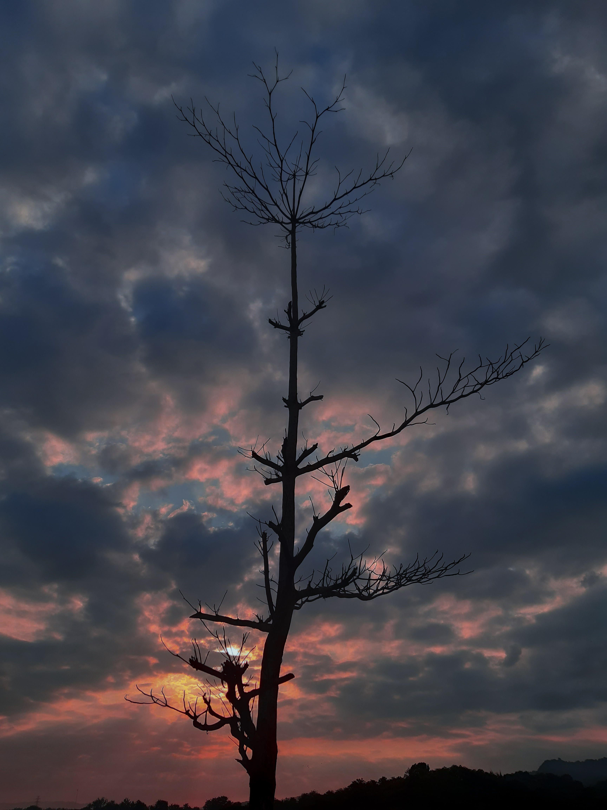

Fotografi
Fotografi (dari bahasa Inggris: photography, yang berasal dari kata Yunani yaitu "photos": cahaya dan "grafo": melukis/menulis) adalah proses melukis/menulis dengan menggunakan media cahaya. Sebagai istilah umum, fotografi berarti proses atau metode untuk menghasilkan gambar atau foto dari suatu objek dengan merekam pantulan cahaya yang mengenai objek tersebut pada media yang peka cahaya. Alat paling populer untuk menangkap cahaya ini adalah kamera. Tanpa cahaya, tidak ada foto yang bisa dibuat.
Prinsip fotografi adalah memfokuskan cahaya dengan bantuan pembiasan sehingga mampu membakar medium penangkap cahaya. Medium yang telah dibakar dengan ukuran luminitas cahaya yang tepat akan menghasilkan bayangan identik dengan cahaya yang memasuki medium pembiasan (selanjutnya disebut lensa).Untuk menghasilkan intensitas cahaya yang tepat untuk menghasilkan gambar, digunakan bantuan alat ukur berupa lightmeter. Setelah mendapat ukuran pencahayaan yang tepat, seorang fotografer bisa mengatur intensitas cahaya tersebut dengan mengubah kombinasi ISO/ASA (ISO Speed), diafragma (Aperture), dan kecepatan rana (speed). Kombinasi antara ISO, diafragma & speed disebut sebagai pajanan (exposure).
Pada tahun 1614, Angelo Sala menggunakan perak nitrat yang dibakar oleh sinar matahari dengan kertas dibungkus. Ini dikemukakannya pada tulisannya yang berjudul Septem Planetarum terrestrium Spagirica recensio, "Jika serbuk perak nitrat terkena sinar matahari, maka akan berubah menjadi hitam seperti tinta".[1] Penemuan dengan efek sinar matahari ini dianggap kurang berguna oleh ilmuwan lain. Pada tahun 1717, Johann Heinrich Schulze, profesor Jerman yang menggunakan botol berisi perak nitrat dan kapur secara tidak sengaja ada dekat jendela.
Di era fotografi digital di mana film tidak digunakan, maka kecepatan film yang semula digunakan berkembang menjadi digital ISO. Fotografi saat ini telah berkembang menjadi sebuah gaya hidup, hal ini dimulai semenjak munculnya era digital dan berkembangnya media sosial.